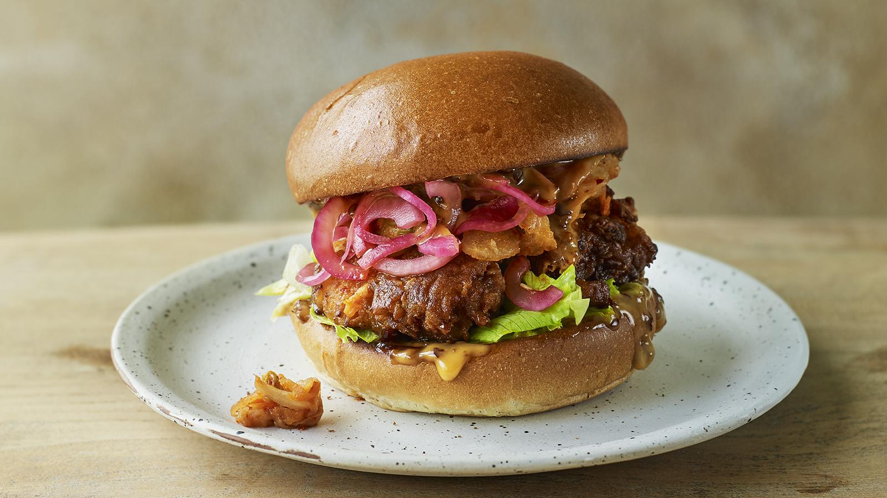
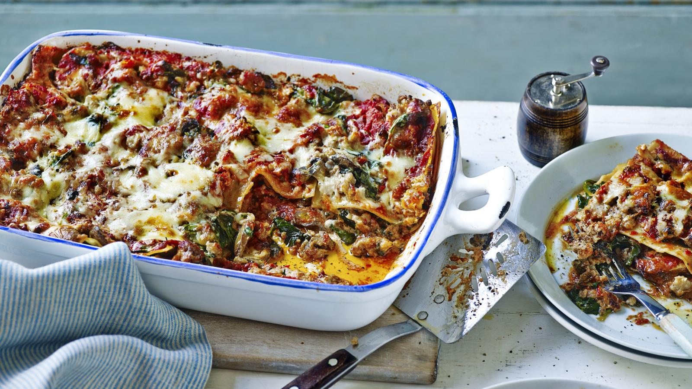

Fried Chicken Sandwich

Express Lasagne

Breakfast quesadillas

Roast turkey crown

Shakshuka
123,789 Followers
Nigella has been teaching us about the pleasures of the table since her first book, How to Eat, hit the shelves in 1998. She has since published several best-selling cookery books, many complementing an accompanying television series, and has become known for her sensual descriptions of her dishes.
Nigella studied Medieval and Modern Languages at Oxford, and went on to work as a publisher, becoming deputy literary editor of The Sunday Times. She then pursued a successful career as a freelance journalist, during which time her work was published in significant culinary and lifestyle magazines around the world.
Nigella was voted author of the year at the 2001 British Book Awards. In 2001 she was awarded – but turned down – an OBE from Her Majesty the Queen for services to journalism and cookery.

Fried Chicken Sandwich
Express Lasagne
Breakfast quesadillas
Roast turkey crown
Shakshuka

How to prepare an advocado
How to grate garlic
How to cook pasta
How to make scrambled eggs

Using punchy ingredients like gochujang, it's easy to see why Korean food is rising in popularity here in the UK. But what other ingredients should we be stocking up on to make surprisingly-simple staple dishes?
A healthy liver is vital for so many things, from detoxification to immune defence. Learn what to eat, and what to avoid, to keep yours healthy…